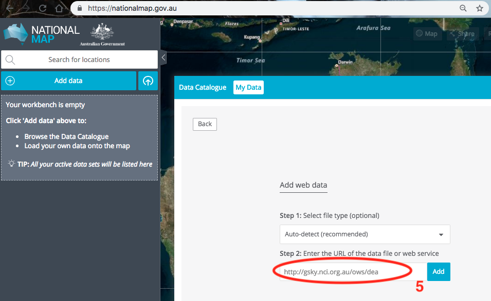
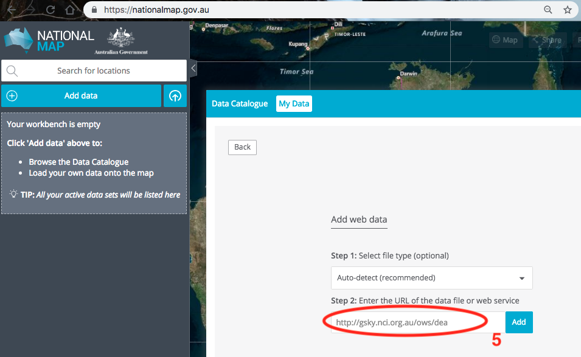
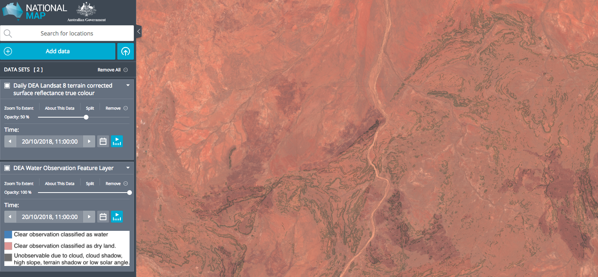
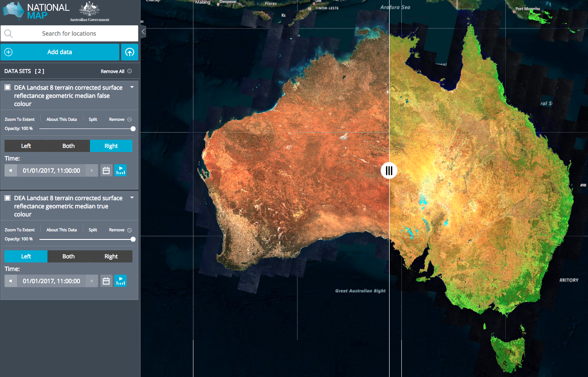

National Map web site¶
Go to the National Map website
Click on Add Data -> My Data -> Web Data and type:
http://gsky.nci.org.au/ows/dea
 

GSKY provides a catalogue of all the datasets and links to NCI’s ISO 19115 data catalogue entries:

You can add multiple datasets to the National Map and plot them on top of each other. Here is an example Landsat 8 terrain corrected surface reflectance true colour data overlain by Water Observations from Space (WOfS) data:
The split bar feature allows one to compare different datasets as well as different dates from the same dataset. Below is a example of using the scroll bar, with Landsat 8 geomedian true colour plotted on the left and Landsat 8 geomedian false colour plotted on the right:
